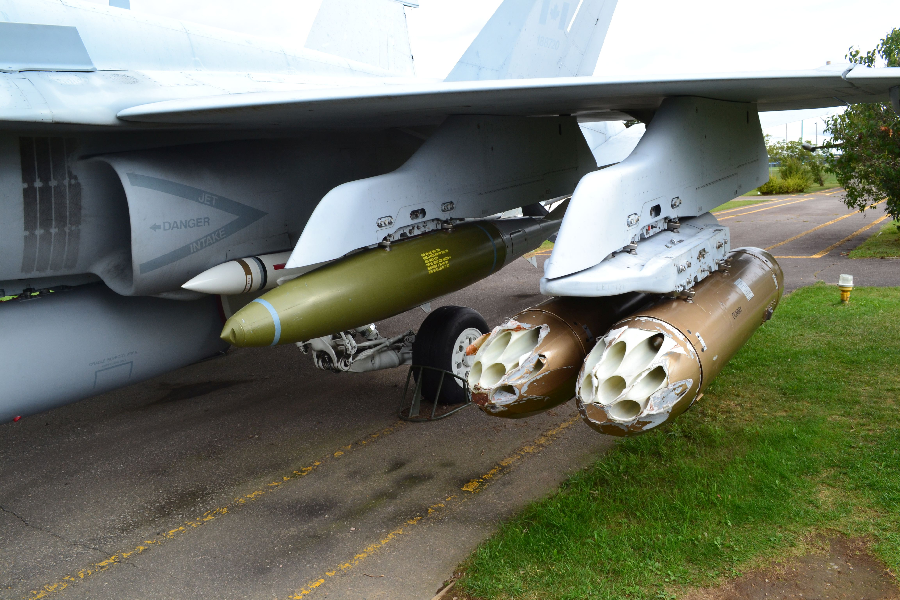
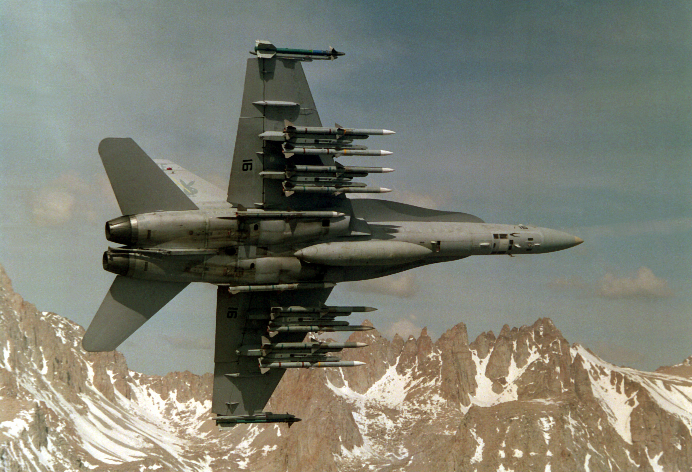
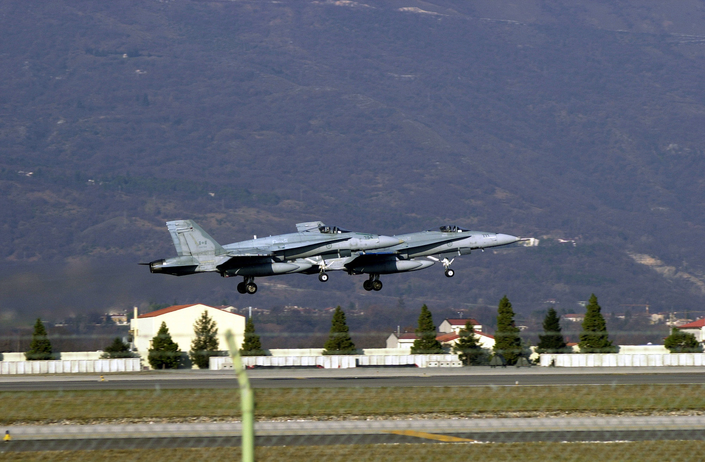

The originally-called McDonnell Douglas F/A-18 Hornet, the McDonnell Douglas F-4 Phantom II, the Lockheed Martin F-35 Lightning II, the Dassault Rafale and even aircraft such as the Mikoyan MiG-29, Saab JAS 39 Gripen or Panavia Tornado are considered modern (or near modern) multi-role aircraft. Many share similar qualities such as incredible speed, advanced avionics, modern weaponry and larger payloads to carry out many different missions. The example which will be used to describe capabilities more in depth will be the McDonnell Douglass F/A-18.
 The F/A-18 was rolled out on September 13 1978 to begin trials with the USN and USMC. The aircraft was to replace many aircraft of varying roles in different branches and so needed to be able to bridge many capabilities. To do this the F/A-18 was equipped with twin jet engines to reach speeds up to 806 mph (Mach 1.8), a standard AN/APG-73 long range air-to-air radar, arresting gear for carrier landings, one 20mm rotary cannon and importantly 9 hardpoints for weapons carrying. The 9 hardpoints, located under the fuselage and wings, allowed the F/A-18 to carry practically every weapon system available to it, both for air and ground.
Using it great carrying capacity and avionics the F/A-18 would carry out the majority of aircraft roles for many nations (including Canada) such as: Combat Air Patrol, Air Interception, Airborne Escort, Reconnaissance, Precision Bombing, General Saturation of Targets, SEAD, CAS and much else, including while based aboard aircraft carriers. A later variant of the F/A-18, the F/A-18E/F or Super Hornet came into production in 1999 with improved avionics, flight performance and weapons. Then a modification of the F/A-18E/F Super Hornet was made known as the EA-18G Growler by Boeing. The EA-18G is a electronic warfare variant of the original Hornet allowing this aircraft (with some modification) to carry out even more tasks including: Surveillance, Hostile Detection, Hostile Jamming, Illumination of Targets, Target Identification and much more.
The F/A-18 is truly a remarkable multi-role aircraft and among many others around the world is able to carry out many different tasks on one airframe.
Back to Home (Index)